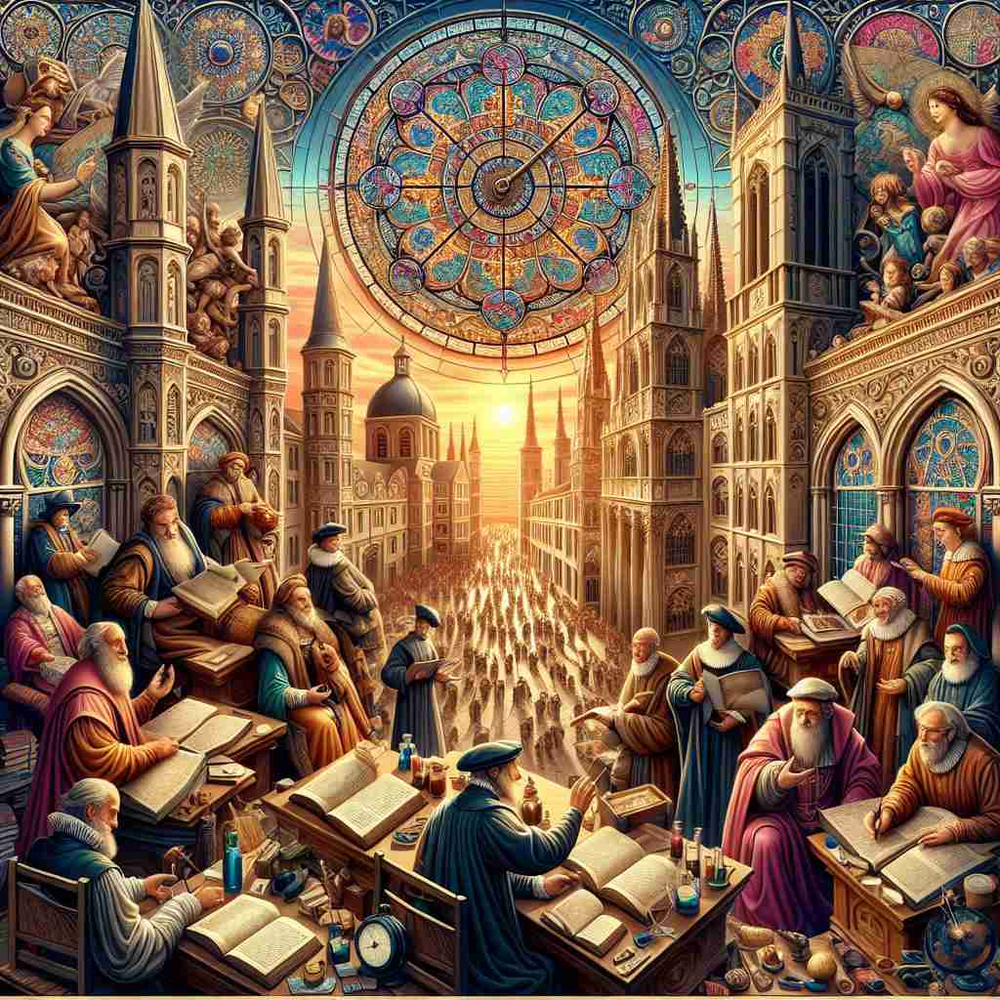

💬 The Renaissance of art changed how people viewed creativity.

💬 The painting illustrates a cultural Renaissance where knowledge and art flourish.
🔈 [rɪˈneɪsns]
🗝️ n. a rebirth or revival of learning, culture, and art
🖼️ 想象一座虽然破旧却充满魅力的图书馆，墙壁上挂满了中世纪和文艺复兴时期的画作，书架上则摆满关于艺术、历史和哲学的经典著作。学者们在这里聚集，激烈地讨论着达·芬奇的画作和莎士比亚的戏剧，沉浸在知识与文化复兴的氛围中。这正是 'renaissance' 作为学习、文化和艺术复兴的体现。
🔍 想象'renaissance'是一朵重新绽放的花。核心含义是'重生'或'复兴'，特别是在文化和艺术方面。这个概念可以延伸到任何领域的新生或重新兴起，比如城市发展、传统工艺的复兴等。记住这个词时，可以想象一幅画：枯萎的花重新绽放，象征着新的生机和活力。这个形象可以帮助你联想'renaissance'在不同语境中的应用。
💬 The Renaissance of art changed how people viewed creativity.
💬 The painting illustrates a cultural Renaissance where knowledge and art flourish.
🌳 词根 "nais" 源自拉丁语 "nasci"（诞生），前缀 "re-" 表示"再，重新"，后缀 "-ance" 用于构成名词，整体意思是"重生、复兴"。通常用来指文艺复兴时期。
💡 可以通过联想“re-”表示“再”，以及“naissance”接近“出生”的意思，来记住“renaissance”表示“重生或复兴”的概念。例如，想象一个时代文化艺术的“重生”。
🗝️ n. any period of new growth or activity
🖼️ 在春天的农田里，农民们开始播下新的种子。田地里到处都是新芽冒出的绿色景象，象征着新的生命力和希望。人们忙碌而充满活力地工作，这是一个充满新生和活动的季节，这正是 'renaissance' 作为新生长或活动时期的象征。
💬 The city is experiencing a renaissance in urban development.
❓ 扩展了"重生"的概念到任何领域的新兴发展
🗝️ n. a revival of or renewed interest in something
🖼️ 在一个现代城市的音乐剧场中，一部经典剧目几十年后再次上演。观众们对于久违的经典音乐和故事展现出极大的兴趣和热情，座无虚席。人群中不断响起充满欣赏的欢呼声，正是这种重新点燃的兴趣，诠释了 'renaissance' 作为复兴或重新兴趣的含义。
💬 There's been a renaissance in traditional crafts recently.
❓ 将"复兴"的概念应用于对事物的兴趣
🗝️ adj. relating to the Renaissance period of European history
🖼️ 在一个历史博物馆中，展厅里展示着文艺复兴时期的珍贵画作和雕塑。游客们惊叹于其细腻的艺术表现和历史价值，导游仔细讲解着这个时代艺术、科学和文化的鼎盛发展。这种对文艺复兴时期的具体历史关联展示了 'renaissance' 作为欧洲历史文艺复兴时期的相关性。
💬 Renaissance art is known for its realism and use of perspective.
❓ 直接指代历史上的文艺复兴时期